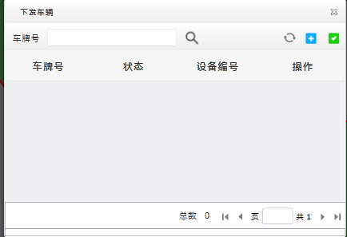
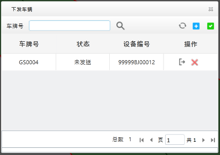

应用电子围栏
将电子围栏应用到车辆上。围栏应用成功后，车辆在进出电子围栏将向安全平台上报“进/出围栏告警”；车辆在围栏内行驶违反限速规则，将向安全平台上报“围栏内超速”告警。
| 1. | 在电子围栏主界面的信息列表中选择一个电子围栏，单击右侧〖〗，打开“下发车辆”窗口，如下图所示。

Fig 57 电子围栏应用到车辆 |
| 2. | 单击〖 |
| 3. | 选择车辆。可展开组织机构直接勾选待选择车辆；也可输入车牌号，单击〖 同一辆车可应用多个电子围栏，但如果该电子围栏已经应用到某辆车，则这辆车将不会出现在可选车辆列表中。
Fig 58 车辆选择 |
| 4. | 单击〖确定〗，选定的车辆将添加到应用到车辆列表中。

Fig 59 下发车辆 |
| 5. | 单击〖
|
| 6. | （可选）单击〖〗，可刷新围栏下发车辆状态。单击车辆右侧〖〗，可删除单个车辆与电子围栏的关联。 |